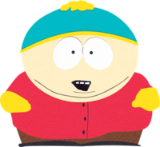
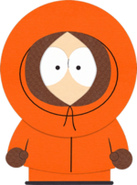
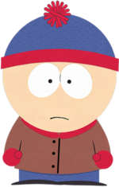

SOUTH PARK
“A família do Kenny é tão pobre que ontem eles tiveram que hipotecar a caixa de papelão deles de novo.” ~ Cartman
Eric Cartman
Eric tem 8 anos e em geral, é impulsivo e egocêntrico, e independente do tamanho da bizarrice que ele é capaz de falar que vai acontecer, sempre acaba acontecendo o que justifica a maioria dos desentendimentos com Kyle. Uma coisa que deixa Cartman extremamente ofendido, é falar de seu tipo físico e questioná-lo, no qual irá responder apenas que possui ossos grandes. Em um episódio sobre um tratamento para sua obesidade, um homem o chama de gordo, Cartman então realiza uma ligação. Pouco tempo depois o homem recebe um telefonema de uma notícia extremamente ruim de uma hospitalização ou possivelmente morte de alguém próximo dele. Cartman então, alega: Não sou gordo, tenho ossos grandes. Cartman é extremamente vingativo e a raiva é a sua motivação que o leva a cometer as mais bizarras atrocidades, como fazer Scott Tenorman se alimentar dos restos de seus pais em um festival de chili após ser humilhado pelo mesmo várias e várias vezes. Já foi revelado que Cartman possui um vasto conhecimento de engenharia e matemática, ciências humanas e exatas e arte, capaz de passar estruturas e planos para um papel com perfeição. É investigador e um estrategista sem igual em South Park. Quando não está com raiva, é só um idiota mimado. Cartman na maioria das vezes, também tem um hábito de achar que várias pessoas conspiram contra ele ou contra a América. Cartman também consegue cargos altos muito fácil, o que facilita seus planos perversos. Também se destaca por cometer várias bizarrices em razão da sua infantilidade e inocência.
;Kyle Broflovski

Kyle Broflovski é um personagem fictício da série de animação para adultos South Park . Ele é dublado e vagamente baseado no co-criador Matt Stone . Kyle é um dos quatro personagens centrais da série, junto com seus amigos Stan Marsh , Kenny McCormick e Eric Cartman . Ele estreou na televisão quando South Park foi ao ar pela primeira vez em 13 de agosto de 1997, depois de ter aparecido pela primeira vez nos curtas The Spirit of Christmas criados por Stone e o colaborador de longa data Trey Parker em 1992 ( Jesus vs. Frosty ) e 1995 ( Jesus vs. Santa ). Kyle é um estudante do ensino fundamental que geralmente tem experiências extraordinárias, não típicas da vida convencional de uma pequena cidade em sua cidade natal fictícia de South Park, Colorado . Kyle é distinto como uma das poucas crianças judias do programa e, por causa disso, muitas vezes se sente um estranho entre o grupo principal de personagens. Seu retrato neste papel é muitas vezes tratado de forma satírica e atraiu elogios e críticas dos telespectadores judeus.
Kenny McCormick
Kenny é um aluno da terceira série, posteriormente da quarta série, que geralmente tem experiências extraordinárias, não típicas da vida convencional de uma cidade pequena em sua cidade natal, South Park, Colorado , onde mora com sua família pobre . Kenny é animado por computador para se parecer com o método original de animação recortada do programa . O personagem ganhou popularidade graças a uma piada durante as primeiras cinco temporadas da série, em que Kenny sofria rotineiramente uma morte excruciante antes de retornar vivo e bem no próximo episódio com pouca ou nenhuma explicação. Stan costumava usar a frase de efeito "Oh, meu Deus! Eles mataram Kenny!", Seguido por Kyle exclamando "Seus bastardos!". Desde a sexta temporada em 2002, a prática de matar Kenny raramente foi usada pelos criadores do programa. Vários episódios criaram a mordaça, às vezes apresentando explicações alternativas para as reaparições não reconhecidas de Kenny. poha mataram o kenny de novo
Stan Marsh
Stan é um estudante do ensino fundamental que geralmente tem experiências extraordinárias, não típicas da vida convencional de uma cidade pequena em sua cidade natal fictícia de South Park, Colorado . Stan é geralmente descrito como lógico, corajoso, paciente e sensível. Ele é franco ao expressar sua distinta falta de estima pelos adultos e suas influências, já que os residentes adultos de South Park raramente fazem uso de suas faculdades críticas.